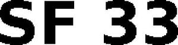

Trade Mark Journal No.2025/024 13 June 2025
WO0000001799436 (7)
Office of origin: European Union Intellectual Property Office (EUIPO)
Date of International Registration:18 April 2024
Date of designation in the UK:
8 May 2025

- Class 7
- Hydraulically, pneumatically and/or electrically operated installations and apparatus for vaporising, spraying or diffusing gases, liquids or solids, in particular paints, lacquers, dispersions, adhesives, resins, coolants and lubricants, disinfectants and similar preparations; installations for marking roads and areas; lacquering installations and automatic lacquering machines, including lacquering installations and automatic lacquering machines for hot-lacquering; powder coating installations; coating installations for the automobile industry; cavity sealing installations; lacquering dip baths of materials resistant to paint solvents; plaster-spraying installations and all-purpose machines for plastering and coating material; all of the aforesaid apparatus and aforesaid installations in electrostatic configuration, all installations consisting predominantly of electrically, pneumatically or hydraulically operated spray guns, hand-held spray guns, pumps, compressors, mains apparatus, high-voltage generators, nozzles and nozzle extensions of plastic or metal, touch protection elements, and nozzle changing and nozzle exchanging devices, namely manually turnable or exchangeable nozzle receiving elements; nozzle holders, nozzle sets, metal or plastic tubes, containers of plastic or metal for media for vaporising, spraying or diffusing, paint heaters, control and regulatory apparatus and supports, for paint spraying apparatus and installations; paint filters, paint pressure regulators and paint reducing valves, being parts of painting machines; bottle wash scrubbers [machines]; high pressure washers and parts therefor; mechanical degreasing apparatus; mechanically operated cartridge presses; mechanical fuel suction apparatus; electrically operated hand tools, namely paint application and spraying apparatus, clamping and nailing apparatus (not for offices), cutting and abrading apparatus and engraving apparatus; suction and blast guns for cleaning textiles and atomizing apparatus for cleaning textiles; electrically operated paint rollers; electric wallpaper strippers [machines]; clamping and nailing apparatus; electric drills and screwdrivers; separating and abrading machines; electrically operated airless paint sprayers and parts and fittings therefor, included in this class; guns for spraying paint (parts of machines); pumps [machines]; compressors; electrically operated paint mixing installations; the aforesaid goods in particular in the form of airless sprayers or for use in airless sprayers.
J. Wagner GmbH
Representative: OTTEN, ROTH, DOBLER & PARTNER MBB PATENTANWÄLTE, Grosstobeler Str. 39, 88276 Ravensburg/Berg, GERMANY